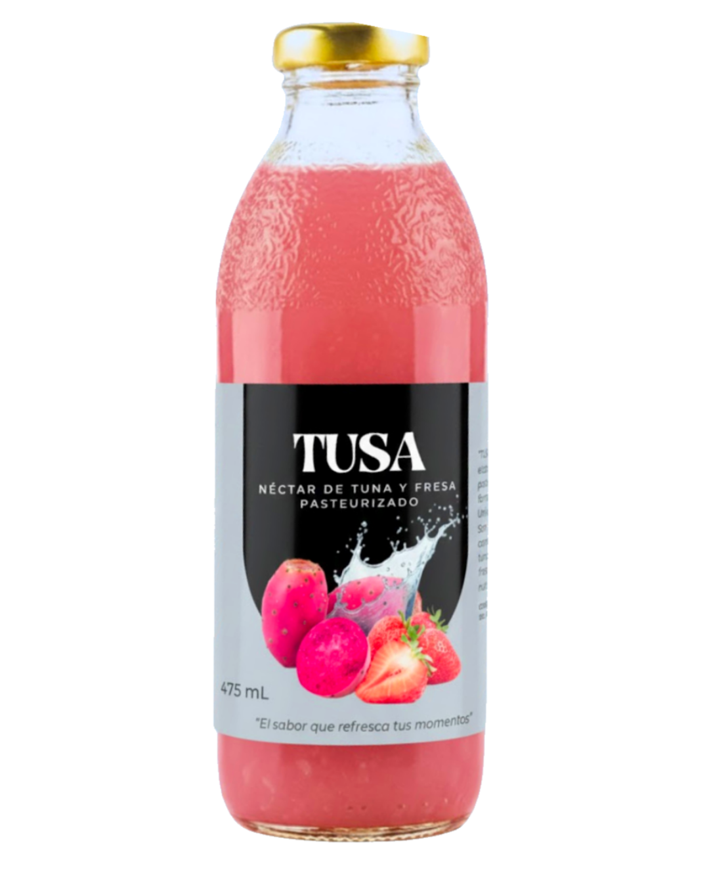

TUSA
Refrescante combinación de tuna y fresa desarrollada con innovación, sabor 100% natural y un enfoque moderno creado por estudiantes de la UNMSM.

Ingredientes y Formulación Técnica
Tuna Morada
Pulpa Base
Fresa
Pulpa Complemento
Agua Tratada
Relación Pulpa:Agua
Azúcar Rubia
12° Brix
CMC
Estabilizante (0.1%)
Conservante
Sorbato de Potasio (0.025%)
Ácido Cítrico
Regulador de pH (0.1%)
Beneficios
Sin Colorantes
Sin Saborizantes
Pulpa Natural
Pasteurizado
Proceso de Ingeniería Lineal
Recepción y Triaje
Inspección técnica de la tuna morada y la fresa para separar frutos podridos.
Lavado Hidrodinámico
Limpieza profunda con agua para eliminar partículas remanentes de tierra y espinas sueltas.
Desinfección Diferenciada
Inmersión en NaClO por 10 min: 80ppm para la tuna y 50ppm cuidando la porosidad de la fresa.
Acondicionamiento Manual
Extracción de la cáscara de tuna y corte meticuloso del pedúnculo y sépalo de las fresas.
Licuado e Hidrólisis
Triturado de las celdas de la pulpa para liberar los jugos y azúcares naturales atrapados.
Filtrado de Semillas
Tamizado de alta precisión para separar limpiamente las semillas de la pulpa fina.
Mezclado Maestro (2:1)
Combinación científica uniendo la pulpa de Tuna y Fresa bajo una proporción matemática exacta.
Estandarización Final
Dilución de pulpa en agua (1:3) ajustando a 12° Brix con estabilizantes exactos al 0.1%.
Pasteurización Controlada
Agitación a temperatura constante de 80°C durante un lapso riguroso de 30 segundos.
Envasado Hermético e Inversión
Llenado a >75°C en botellas de 300ml, dejándolas boca abajo por 2 min previo a su refrigeración a 4°C.